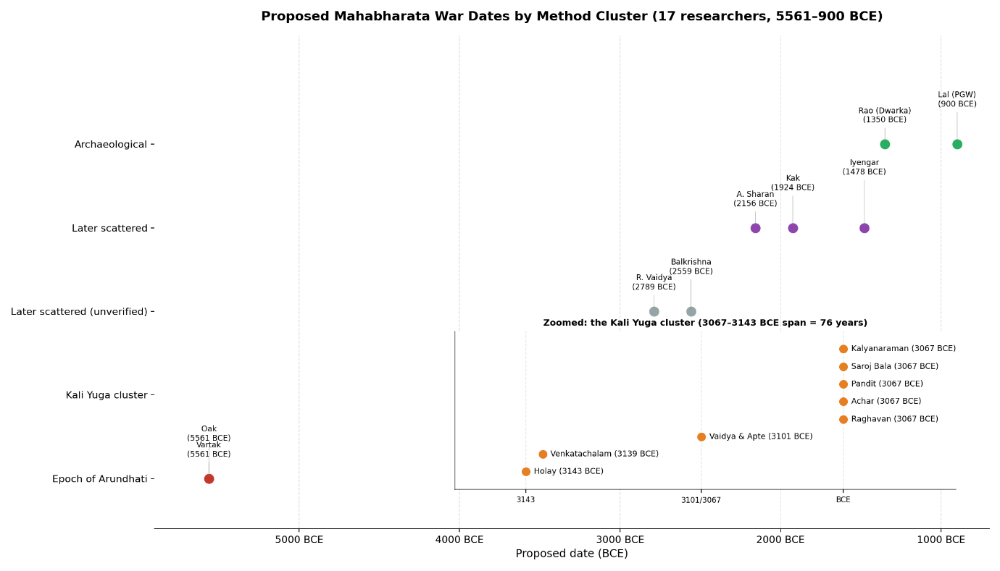
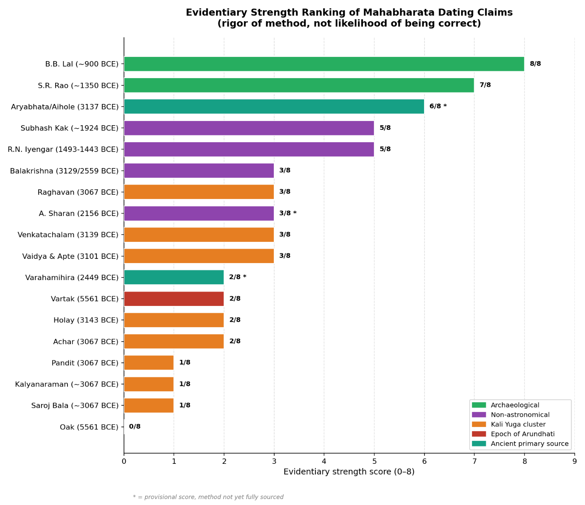
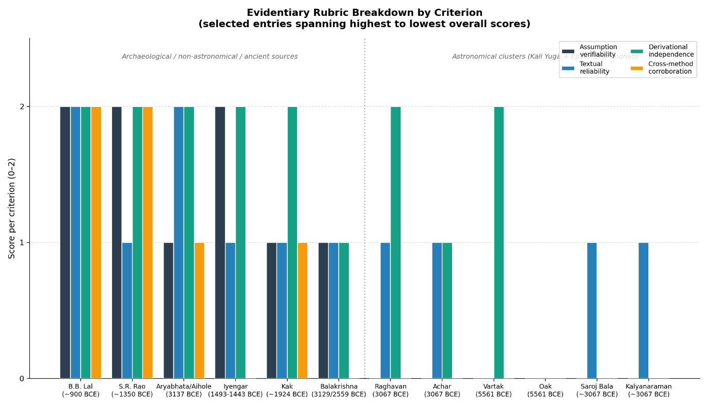

Chapter 1: Introduction
1.1 The problem
For more than a century, researchers have attempted to date the Mahabharata war by treating the epic's scattered astronomical references planetary positions, eclipses, star alignments, comet sightings as a kind of embedded timestamp. The premise is intuitive: if the text describes a specific configuration of the sky, and that configuration occurred only once (or rarely) in the astronomical record, then locating it should fix the event in time with a precision no other ancient text could offer. B.N. Narahari Achar, a physics professor whose work is among the more academically credentialed in this literature, catalogued over 150 such references across three books of the epic and used sky-mapping software to test them against the historical record. Nilesh Oak claims to have tested more than 200. P.V. Vartak, working without modern planetarium software, made his own independent case decades earlier.
If this method worked as its practitioners believe it does, the result of a dozen or more independent researchers applying it should be convergence; different people, working from the same text, arriving at approximately the same year, the way independent measurements of a physical constant cluster around a true value. That is not what has happened. Instead, more than a dozen credentialed and semi-credentialed researchers have produced war-date estimates spanning from 5561 BCE to as late as 1443 BCE, a scatter of over four thousand years, produced by a method that in each individual application is presented as precise to the day.
This paper takes that scatter itself as the object of study.
1.2 Research question
The central question this paper addresses is not when did the Mahabharata war occur. It is: why does a method that its practitioners describe as rigorous and internally consistent fail to converge across independent applications, and what does the pattern of that failure reveal about the method's actual evidentiary structure?
A secondary, closely related question follows from the first: within this fractured landscape of competing claims, which proposed dates and more importantly, which methods are more evidentially defensible than others, independent of whether any of them happens to be correct? This paper does not attempt to adjudicate historicity. No external, independently datable record no foreign chronicle, no synchronized inscription, no carbon-dated battlefield exists against which any of these dates could be checked. What can be assessed, however, is the internal rigor of each method on its own terms: whether its foundational assumptions are independently verifiable or merely asserted, whether it relies on textual material likely to be original or contested, whether it was derived independently or adopted from an earlier researcher, and whether it is corroborated by any evidence outside its own method.
1.3 Why the divergence matters
It would be easy to treat a 4,000-year spread of estimates as simply evidence that astronomical dating of ancient epics doesn't work, and move on. That conclusion may ultimately be correct, but arriving at it responsibly requires more care than that, for two reasons.
First, the estimates are not randomly scattered, they cluster. The great majority fall into two identifiable groups: one centred around 3067–3163 BCE, built on the assumption that the traditional Kali Yuga epoch began in 3102 BCE, and a second, smaller but vocal cluster centred on 5561 BCE, built on a rejected alternative epoch anchored to the relative motion of the stars Arundhati (Alcor) and Vasistha (Mizar). At first glance, clustering looks like corroboration of multiple researchers, working somewhat independently, landing in the same range. This paper argues that this appearance is largely illusory. Section 5 of this paper (Analysis) will show, using the dataset assembled in Chapter 4, that researchers within each cluster are not independently confirming a date; they are, in a majority of documented cases, either sharing the same unproven foundational assumption or directly adopting an earlier researcher's specific date under the language of "testing" or "corroborating" it. At least three cases in this dataset; Nilesh Oak's relationship to Vartak, Saroj Bala's relationship to Achar, and S. Kalyanaraman's relationship to Achar and Raghavan involve a later researcher presenting what is substantively an endorsement of a prior date as if it were an independent derivation.
Second, this critique is not only made from outside the field. As Section 2.6 details, at least one credentialed researcher working within this very debate has independently reached a closely related conclusion about the method's limits a point worth flagging early, since it means this paper's core argument is not simply an external sceptic’s dismissal of a tradition its practitioners would reject, but a formalization of a concern already present, if underdeveloped, within the literature itself.
1.4 Scope and what this paper does not claim
This paper is a methodological critique, not a historicity argument. It does not argue that the Mahabharata war did or did not occur, nor does it argue for any specific date as correct. It also does not treat every proposed date and its proponent with equal suspicion; the dataset and ranking system developed in Chapters 3 and 4 are explicitly designed to distinguish between methods on the basis of rigor, not to dismiss the astronomical dating project wholesale. Archaeological and geological approaches such as Painted Grey Ware stratigraphy at Hastinapur, marine archaeology at Dwarka are treated as a distinct category with different evidentiary properties from text-based astronomical retro calculation, and the paper will argue that they are, on the whole, more defensible, without claiming they resolve the underlying historicity question either.
Throughout, a consistent distinction is maintained between (a) findings that are independently verifiable through physical or textual evidence, and (b) interpretive leaps, however reasonable that extend those findings toward a specific narrative conclusion. Every claim drawn from popular, devotional, or self-published sources is flagged as such; peer-reviewed or institutionally credentialed sources are noted where they exist, which, as later chapters will show, is less often than the volume of the literature might suggest.
Chapter 2: Literature Review
2.1 Overview and organizing structure
The literature on Mahabharata war dating is not a single continuous scholarly conversation. It is better understood as three loosely connected traditions that rarely engage each other on shared terms: an early twentieth-century astronomical tradition working without computational tools; a later, software-assisted astronomical tradition that split into two rival epoch assumptions; and a separate archaeological and genealogical tradition that does not treat sky-observation as its primary evidence at all. This chapter surveys each in turn, in roughly chronological order within each tradition, before Chapter 4 presents the full comparative dataset.
2.2 The early Kali Yuga tradition
The oldest strand of this literature predates modern planetarium software and works directly from Puranic references and traditional chronology. C.V. Vaidya and Prof. Apte's early twentieth-century calculations, and Kota Venkatachalam's subsequent king-list-and-astronomy hybrid, both anchor the war to the traditional Kali Yuga epoch of 3102 BCE, arriving at 3101 BCE and 3139 BCE respectively. Neither derivation was independently verified against the epoch assumption itself both treat 3102 BCE as a given starting point inherited from Puranic tradition, rather than as a conclusion to be tested. This tradition's methodological character of precise internal calculation built on an unexamined traditional anchor becomes the template that later, more technologically sophisticated researchers in the same broad camp would largely repeat.
2.3 The software-assisted Kali Yuga cluster
Beginning with Srinivasa Raghavan's 1969 paper proposing 3067 BCE on the basis of a Rohini-Saturn occultation and a paired set of eclipses, a larger cluster of researchers converged on dates within several decades of this figure while retaining the same 3102 BCE epoch assumption. B.N. Narahari Achar's more extensive sky-mapping analysis covering over 150 astronomical references and explicitly crediting Raghavan's earlier date as corroborated and arrived at the same 3067 BCE figure and represents the most academically credentialed entry in this cluster, given Achar's position as a physics professor and the relative rigor of his software-based cross-referencing. P.V. Holay's independent six-configuration analysis reached a nearby but distinct 3143 BCE. Later entrants to this cluster are progressively less independent: Manish Pandit's work functions primarily as a comparative defence of the 3067 BCE figure against rival claims rather than an original derivation; Saroj Bala's writing, co-authored with Vedveer Arya, explicitly builds on the Achar/Raghavan framework and is presented with an advocacy framing aimed at educational adoption; and S. Kalyanaraman's contribution consists of reviewing and endorsing Raghavan and Achar's calculations as correct, then using that endorsement as a baseline for further calculations, rather than independently re-deriving the war date. What unites this entire cluster, from Vaidya and Apte through Kalyanaraman, is the shared, unexamined assumption that the Kali Yuga began in 3102 BCE, a traditional chronological marker rather than an independently dated astronomical event.
2.4 The rival Epoch-of-Arundhati cluster
A smaller but methodologically distinct cluster rejects the Kali Yuga anchor entirely. P.V. Vartak's foundational work argued that the ~3100 BCE cluster rested on erroneous astronomical data, and proposed instead that the relative motion of the stars Arundhati (Alcor) and Vasistha (Mizar), along with other stellar positions described in the text, placed the war far earlier, at 5561 BCE. Nilesh Oak's subsequent work, though extensive in its own right; Oak describes testing over 200 astronomical and associated observations using planetarium software across more than fifteen years was explicitly framed as an attempt to falsify Vartak's pre-existing date rather than to derive a date independently; Oak's own account presents 5561 BCE as the date his testing "could not falsify," which is a materially different claim than an independent derivation would be. This cluster has drawn substantial internal critique from within the broader astronomical dating community itself: Dr. Raja Ram Mohan Roy has published a multi-part rebuttal arguing that the Arundhati-Vasistha relative motion claim central to Vartak's original argument falls within the margin of error of the software tools used and cannot support a specific date, and has separately published an eighteen-part point-by-point refutation of Oak's individual observations. A separate academia.edu paper from within the 3067 BCE camp is explicitly titled as addressing "falsified claims of Vartak and Oak," indicating that the dispute between these two major clusters is not merely a difference of method but an active, mutual rejection of the other's core evidence.
2.5 The archaeological and genealogical tradition
A methodologically separate tradition does not treat sky-observation as primary evidence at all. B.B. Lal's 1951-52 excavations at Hastinapur, Indraprastha, Mathura, Kurukshetra, and Kampilya identified Painted Grey Ware as the earliest common material culture layer linking these Mahabharata-associated sites, yielding a date of approximately 900 BCE which is several thousand years later than either astronomical cluster, and grounded in stratigraphic evidence rather than textual interpretation. S.R. Rao's marine archaeological excavations at Dwarka and Bet Dwarka, published in the peer-reviewed Indian Journal of Marine Sciences, dated submerged structures to approximately the fourteenth century BCE using stratigraphic, ceramic, and inscriptional evidence, though the identification of the site specifically as Krishna's Dwarka, rather than an unrelated ancient port that later submerged, remains an interpretive extension beyond what the material evidence alone establishes. Subhash Kak's genealogical approach, which uses Puranic king-list lengths rather than sky-observation, arrives at approximately 1924 BCE, and is distinguished from the astronomical clusters both by its method and by Kak's own explicit acknowledgment as discussed further in Section 2.6, that the resulting date cannot be treated as definitive given uncertainty over which portions of the text are original. R.N. Iyengar's peer-reviewed analysis (2003, Indian Journal of History of Science) explicitly tested the eclipse and planetary data against the widest plausible search window, including the traditional 3102 BCE epoch, and found only 1493–1443 BCE internally consistent which provide a direct empirical rejection of the Kali Yuga epoch assumption from within the astronomical-software tradition itself, rather than an assumption of a different epoch.
2.6 A critique from within the field
Of particular relevance to this paper's argument, Kak's published position includes a direct methodological caution rarely voiced elsewhere in this literature: that dates produced by retro calculating astronomical software cannot be treated as definitive, because it is frequently unknown whether a given verse containing an astronomical reference belongs to the Mahabharata's earliest compositional core or was added during the text's long process of expansion, and that the various proposed dates in circulation are, in his words, sometimes mutually contradictory. This is a materially different kind of statement than the inter-cluster critiques discussed in Sections 2.3 and 2.4, which largely argue that a rival researcher's specific astronomical reading is technically wrong. Kak's caution instead challenges the underlying premise that the text can support this kind of dating exercise at all; a critique that anticipates the argument developed across this paper, and one made by a credentialed researcher working within the field rather than an outside sceptic.
2.7 Gaps in the existing literature
Two gaps in the existing literature motivate this paper's approach. First, while individual researchers and rival camps have published extensive point-by-point critiques of specific claims Roy’s rebuttals of Vartak and Oak being the most developed example no source identified in the course of this research has attempted a systematic, comparative meta-analysis across the full range of proposed dates, scoring each on a consistent set of evidentiary criteria rather than arguing for one specific figure over the others. Second, the publication landscape itself spanning peer-reviewed journals, institutional excavation reports, self-published books, academia.edu uploads, and blog-based rebuttal series, often with little indication in popular summaries of which category a given claim falls into has not itself been treated as a subject of analysis, despite being directly relevant to how much confidence any given claim in this literature should command. Chapters 3 and 4 address both gaps directly.
Chapter 3: Methodology
3.1 Data collection approach
The dataset underlying this paper (presented in full in Chapter 4) was built incrementally, entry by entry, rather than drafted from a pre-existing summary of "the debate." Each entry required identifying: the specific researcher and proposed date; the specific astronomical, archaeological, or genealogical method used; the foundational assumption the method depends on; whether the derivation is independent of other researchers in the dataset or adopts/extends an existing date; the publication venue and its level of scholarly vetting; and any documented critique of the claim, drawn from primary sources where available and secondary summaries where primary sources could not be located.
This approach was deliberately kept slow and source-first. Entries were only added once a specific claim could be traced to an identifiable source such as a book, paper, blog post, or documented secondary account rather than assembled from a generalized impression of what "the astronomical dating camp" or "the archaeological camp" believes. Where sourcing was thin, this is explicitly flagged in the dataset rather than smoothed over, and such entries are excluded from the evidentiary ranking in Section 3.3 until better sourced; R. Vaidya's 2789 BCE estimate remains in this category after repeated search attempts, while Dr. S. Balakrishna's estimate, initially thin, was subsequently traced to an institutional seminar record (Section 4.1) and rescored accordingly illustrating the dataset's incremental, self-correcting construction process described in this chapter.
3.2 Independence classification
A central analytical task of this paper is distinguishing genuinely independent derivations from claims that present themselves as independent corroboration but are, on inspection, adoptions of an earlier researcher's conclusion. Three criteria were used to classify a claim's independence:
Does the researcher derive their own date, or adopt a pre-existing one? A claim is classified as non-independent if the researcher's stated goal was to test, verify, or extend a specific date already proposed by someone else, even if their process involves substantial original work (as with Nilesh Oak's 200+-observation analysis, which was explicitly conducted to test whether Vartak's pre-existing 5561 BCE date could be falsified, rather than to derive a date from first principles).
Does the researcher share the same foundational epoch assumption as an earlier researcher? Even where a researcher performs their own original calculation, if that calculation is built on an assumption, most commonly, that the Kali Yuga began in 3102 BCE that was established by tradition or an earlier researcher rather than independently verified, the resulting date is classified as only semi-independent. This is the case for the majority of the 3067–3163 BCE cluster.
Does the researcher explicitly frame their work as corroboration, review, or endorsement of another's date, rather than original derivation? This applies most clearly to Saroj Bala and S. Kalyanaraman, both of whom explicitly build on or endorse Achar and Raghavan's 3067 BCE date rather than independently deriving a figure.
3.3 The evidentiary strength rubric
Because no external record exists against which any proposed date can be verified, this paper does not rank claims by plausibility or by how many researchers agree with them. Instead, each dataset entry with sufficient sourcing is scored against four criteria, each rated 0–2, for a maximum score of 8:
Assumption verifiability (0–2): Does the method rest on an assumption that can be checked against independent evidence (e.g., stratigraphy, radiocarbon dating), or is it asserted on the authority of tradition or a prior researcher's claim, with no independent check available?
Textual reliability (0–2): Does the method depend on portions of the text that are more likely to belong to its earliest compositional layer, and on readings of those verses that are not seriously contested by other Sanskrit scholars or does it depend on passages and translations that are actively disputed?
Derivational independence (0–2): Per the classification in Section 3.2, is this a genuinely separate derivation, a semi-independent one sharing an unverified assumption, or an explicit adoption/endorsement of a prior researcher's date?
Cross-method corroboration (0–2): Is the date supported by evidence of a fundamentally different kind; archaeological, geological, epigraphic or only by further astronomical calculation, which cannot independently confirm an astronomical claim in the way a different evidentiary method could?
This rubric was applied to every dataset entry with adequate sourcing in Chapter 4's ranking table. Two important limitations apply to its use throughout this paper. First, the rubric measures the rigor of a method, not the probability that its conclusion is correct that a method can score highly for not depending on contested assumptions while still failing to establish that the war, as narrated, actually occurred at the resulting date. Second, one entry (A. Sharan) currently carries a provisional score pending fuller primary-source verification of its method, and this is noted wherever that score is presented; R.N. Iyengar's score, initially provisional, was subsequently confirmed against the primary peer-reviewed publication (Section 4.1) and is no longer provisional.
3.4 Treatment of source quality
Sources cited throughout this paper are explicitly categorized by publication status: peer-reviewed academic publication, institutionally affiliated publication (e.g., Archaeological Survey of India reports), book (traditionally or self-published), academia.edu or ResearchGate upload, and blog or devotional website. This categorization is treated as a relevant data point in its own right as one of this paper's secondary findings, developed further in the Discussion chapter, is that the great majority of the astronomical dating literature exists outside conventional peer review, circulating instead through self-published books, preprint-style academic-networking uploads, and blog-based rebuttal series. This does not automatically invalidate a given claim, but it does mean that the ordinary check of independent expert review has, in most cases, not been applied to it, and the paper treats this as part of what needs to be evaluated rather than a neutral background fact.
3.5 Limitations of this methodology
This approach has clear limits, which are stated here rather than left implicit. The rubric in Section 3.3 is a tool for structured comparison, not a mathematically precise instrument but the 0–2 scoring on each criterion involves qualitative judgment, particularly for "textual reliability," where assessing whether a verse belongs to an original core layer is itself a contested question in Mahabharata textual scholarship (addressed further in the Literature Review). Additionally, several dataset entries remain incompletely sourced at the time of writing (noted throughout Chapter 4), and their provisional rankings should be treated as such until primary sources can be verified. Finally, this paper's own selection of which claims to include is not exhaustive; it reflects a deliberate focus on the most-cited and most-debated figures in this literature, with additional entries added as research continues, rather than a claim to have captured every dating attempt ever published.
Chapter 4: The Dataset
4.1 Summary
Following the methodology described in Chapter 3, nineteen dating claims were identified, sourced, and classified: seventeen modern researcher entries plus two pre-modern traditional/epigraphic sources (Section 4.3 and dataset entries 18–19). Of the seventeen modern entries, sixteen now carry sufficient sourcing to support an evidentiary strength score; only R. Vaidya's 2789 BCE estimate remains traceable to a single secondary, non-academic listing despite repeated search attempts, and is presented here for completeness but excluded from the ranking discussion in Chapter 5 pending better sourcing. The full dataset, including method descriptions, stated assumptions, independence classification, publication venue, and documented critiques for each entry, is maintained as a standalone reference document (Dataset: Astronomical Dating Claims for the Mahabharata War) and summarized in Table 4.1 below.
Table 1 - Summary of proposed Mahabharata war dates
| # | Researcher(s) | Proposed date | Method category | Independence | Publication status |
|---|---|---|---|---|---|
| 1 | C.V. Vaidya & Prof. Apte | 3101 BCE | Pre-software Puranic/astronomical | Independent (early) | Book (early 20th c.) |
| 2 | Kota Venkatachalam | 3139 BCE | King-list + astronomical cross-check | Independent | Book |
| 3 | P.V. Vartak | 5561 BCE | Stellar motion (Arundhati-Vasistha) | Independent (foundational) | Book |
| 4 | Nilesh N. Oak | 5561 BCE | 200+ observations, planetarium software | Adopts Vartak's date | Self-published / blog |
| 5 | Srinivasa Raghavan | 3067 BCE | Rohini-Saturn occultation + eclipse pair | Independent (foundational) | Academic paper (1969) |
| 6 | B.N. Narahari Achar | 3067 BCE | Sky-map software, 150+ references | Semi-independent (shares epoch) | Academic |
| 7 | P.V. Holay | 3143 BCE | Six planetary configurations | Semi-independent | Book |
| 8 | Manish Pandit | 3067 BCE (endorsed) | Comparative/critical review | Not independent | Self-published |
| 9 | Saroj Bala (+ V. Arya) | ~3067 BCE (aligned) | Cross-referenced astronomy/archaeology/king-lists | Builds on Achar/Raghavan | Book |
| 10 | Subhash Kak | ~1924 BCE | Genealogical (Puranic king-lists) | Independent methodology | Academic |
| 11 | B.B. Lal | ~900 BCE | Painted Grey Ware stratigraphy | Independent (archaeological) | ASI excavation report |
| 12 | S.R. Rao | ~14th c. BCE | Marine archaeology (Dwarka) | Independent (archaeological) | Peer-reviewed journal (1987) |
| 13 | R. Vaidya | 2789 BCE | Unclear and insufficient sourcing (unresolved after two search attempts) | TBD | TBD |
| 14 | Dr. S. Balakrishna | 3129 / 2559 BCE | Thirteen-day eclipse pair (Mbh 6.3.28–29), wide-window search | Independent of epoch; shares textual anchor with Cluster A | IGNCA seminar (institutional) |
| 15 | A. Sharan | 2156 BCE | Positional minimization method | Provisionally distinct | TBD (institutional) |
| 16 | S. Kalyanaraman | ~3067 BCE (aligned) | Review/endorsement of Achar-Raghavan | Not independent | TBD |
| 17 | R.N. Iyengar | 1493–1443 BCE | Eclipse/planetary internal-consistency search, explicitly tests Kali Yuga epoch | Independent : rejects epoch as inconsistent | Peer-reviewed (IJHS 2003) |
| 18 | Āryabhaṭa / Aihole inscription | 3137 BCE | Ancient astronomical treatise + epigraphic record | Independent (predates modern literature) | Primary historical source |
| 19 | Varāhamihira / Śaka era | 2449 BCE | Traditional era-conversion chain | Independent (traditional record) | Primary historical source |
4.2 Visualizing the spread
Arranged on a timeline, the seventeen estimates do not form a single distribution around a central value; they form at least two dense clusters separated by roughly 2,400 years, with a thinner scatter of later, largely non-astronomical estimates trailing off toward the first millennium BCE. Figure 4.1 plots all seventeen entries, grouped by method cluster, with a zoomed inset showing the tightly-packed 3067–3143 BCE cluster in detail.

Cluster A (~3067–3163 BCE): Vaidya & Apte, Venkatachalam, Raghavan, Achar, Holay, Pandit, Saroj Bala, Kalyanaraman eight of seventeen core modern entries, sharing the Kali Yuga epoch assumption, spanning a mere 76 years despite being produced across more than a century of independent-seeming research.
Cluster B (5561 BCE): Vartak, Oak two entries, sharing the Epoch-of-Arundhati assumption.
Scattered later estimates (2789–1443 BCE): R. Vaidya (unverified), Balakrishna (3129/2559 BCE, since firmed up via an institutional seminar record), A. Sharan, Kak, and Iyengar (peer-reviewed, 1493–1443 BCE) none sharing a common assumption with each other or with Clusters A or B.
Archaeological estimates (14th c.–900 BCE): Rao, Lal two entries, methodologically distinct from all astronomical claims.
Pre-modern traditional/epigraphic sources (not plotted in Figure 4.1, discussed in Section 4.3 below): Āryabhaṭa/Aihole inscription (3137 BCE) and Varāhamihira (2449 BCE) ancient astronomical-treatise and epigraphic sources that predate the modern dating literature entirely, included in the full dataset but treated as a categorically distinct evidence type from the seventeen modern researcher entries plotted in the timeline.
This shape is worth pausing on before moving to analysis. A genuinely convergent body of independent evidence would be expected to look like a single cluster with a narrowing distribution as more researchers contribute. What this dataset shows instead is two dense, mutually exclusive clusters roughly 2,400 years apart, plus a long, thin scatter of largely unrelated later estimates a pattern much more consistent with several distinct, internally reinforcing citation communities than with independent measurement converging on a shared value.
4.3 A textual case study: the thirteen-day eclipse verse
Chapter 3 flagged textual reliability whether a method depends on verses whose reading is genuinely settled as one of the four evidentiary criteria applied throughout this paper, and noted that this paper's own assessment of textual reliability had, until this point, relied on secondary characterizations rather than direct examination of the Sanskrit source. This section addresses that gap for one specific, heavily-cited verse, as a worked example of what such direct examination can and cannot resolve.
Three separate entries in this dataset Raghavan (1969), Achar, and Balakrishna anchor part of their derivation to the same passage, Mahabharata 6.3.28–29 (Bhishma Parva), in which the sage Vyasa, cataloguing a series of ominous portents before the war, states:
caturdaśīṃ pañcadaśīṃ bhūtapūrvāṃ ca ṣoḍaśīm imāṃ tu nābhijānāmi amāvāsyāṃ trayodaśīm candrasūryāv ubhau grastāv ekamāse trayodaśīm aparvaṇi grahāv etau prajāḥ saṃkṣapayiṣyataḥ
Rendered into English, the sense is approximately: a lunar fortnight has previously ended on the fourteenth, fifteenth, or (rarely) sixteenth day, but Vyasa says he has never known the new moon to occur on the thirteenth day and that both the moon and sun were eclipsed, twice in one month, on the thirteenth day, out of due season, an omen portending the destruction of the people.
Examining this verse directly clarifies what is, and is not, actually settled about it. The verse is unambiguous on the core claim its three modern users all treat as central: it does describe two eclipses occurring within an unusually short, thirteen-day span, framed explicitly as an unprecedented and inauspicious astronomical event. This is a real point of textual agreement across all three researchers, and it is not manufactured or projected onto the verse a lunar-solar eclipse pair with an unusually short separation is a specific, checkable astronomical claim, and Raghavan, Achar, and Balakrishna are correct that the verse contains it.
What direct examination does not resolve, however, is the question this paper's rubric is actually asking: whether this specific verse belongs to the epic's earliest compositional core, or was added or elaborated during the text's long transmission the same uncertainty Kak raises in general terms (Section 2.6). This verse sits within a longer catalogue of omens in Bhishma Parva chapter 3 (portents of comets, earthquakes, and unnatural animal behavior alongside the eclipse pair), a genre of writing (omen catalogues preceding a great battle) common across ancient epic literature and one textual scholars generally treat as a likely site of later elaboration, precisely because such passages carry strong narrative and religious motivation for embellishment independent of any underlying historical event. This paper did not locate, in the time available, a manuscript-tradition or stemmatic study specifically establishing this verse's compositional layer one way or the other which is itself a finding: the verse most load-bearing for three separate dating claims in this dataset has not, as far as this research could determine, been subjected to the kind of textual-critical scrutiny that would resolve the very question its own use as astronomical evidence depends on.
Two further observations follow from this case study. First, the fact that Raghavan, Achar, and Balakrishna all treat the same verse as reliable, while reaching three different dates (3067, 3067, and 3129/2559 BCE respectively) from it, is itself instructive: it demonstrates concretely that agreement on which verse to use does not produce agreement on what date the verse implies, because the remaining variables which historical window to search, and which specific software/ephemeris model to apply are doing as much work as the textual anchor itself. Second, this verse's status as at least internally consistent and specific (an eclipse pair with a stated, unusual separation) puts it on stronger textual footing than the Arundhati-Vasistha stellar-motion passage central to the Vartak/Oak derivation, which Roy and Talageri's critiques (Section 2.4) argue is better read as a conventional omen reference than as a literal, precisely dateable sky observation. This distinction is reflected in this paper's evidentiary scoring (Chapter 5): entries anchored to the eclipse-pair verse consistently score at least 1 on textual reliability, while entries anchored primarily to the Arundhati-Vasistha reading score 0.
This case study should be read as a proof of concept rather than a completed textual-critical program, and one sourcing caveat should be stated directly: the Sanskrit text quoted above was obtained via secondary academic citation (a paper quoting the verse with transliteration and translation) rather than by direct retrieval from the GRETIL critical-edition corpus itself. This is an important distinction for a paper whose broader ambition, noted in earlier drafts of this research, was to verify translation consistency directly against GRETIL's digitized critical edition. That direct verification checking the quoted verse against GRETIL's text and confirming no meaningful textual variant exists across manuscript traditions remains outstanding and is the most concrete, well-defined next step available to strengthen this paper's textual-reliability claims. A fuller version of this paper's research would extend both the direct-GRETIL-verification step and the direct-verse-examination method demonstrated here to the Arundhati-Vasistha passage and to Achar's and Holay's additional planetary-configuration verses, which remained outside the scope achievable in this draft.
Chapter 5: Analysis
5.1 Clustering is not corroboration
The most immediate finding from Chapter 4's dataset is that eight of the seventeen entries nearly half fall within a roughly one-century band (3067–3163 BCE). On its face, this looks like the strongest evidence in the entire dataset: eight researchers, working over more than a century, using different specific methods (occultation timing, sky-mapping software, six-configuration matching, king-list cross-referencing), landing in broadly the same range.
This appearance does not survive scrutiny of what each entry actually assumes. Every single one of these eight derivations either explicitly assumes or inherits the assumption that the Kali Yuga began in 3102 BCE. This is not a finding any of the eight researchers independently established; it is a traditional chronological marker that predates modern astronomical dating entirely, and none of the entries in this cluster treat it as a hypothesis to be tested rather than a foundation to build on. Once this is understood, the clustering stops looking like eight independent confirmations and starts looking like eight applications of the same starting assumption to slightly different subsets of textual evidence which will naturally produce dates within a similar range of each other, regardless of whether that range has any relationship to when the war, if it occurred, actually took place. A method that assumes a fixed starting point and then searches nearby for corroborating detail is structurally likely to find some, whether or not the underlying premise is correct.
The evidentiary strength scores from Section 3.3 make this explicit: despite representing nearly half the dataset, no entry in this cluster scores above 3 out of 8, and most score 1 or 2. The cluster's size is a function of a shared, unverified assumption being applied repeatedly not a function of accumulating independent evidence. Figure 5.1 presents the full evidentiary strength ranking across all fifteen scored entries, and Figure 5.2 breaks the top and bottom-scoring entries down by individual rubric criterion, showing precisely where each method gains or loses ground.

The ranking makes the pattern from this section visually unambiguous: the two archaeological entries (Lal, Rao) occupy the top two positions by a clear margin, the two non-astronomical entries independent of both major clusters (Kak, Iyengar) form a middle tier, and every entry belonging to either the Kali Yuga cluster or the Epoch-of-Arundhati cluster falls into the bottom half of the ranking, regardless of how much computational or textual effort went into producing it.

This breakdown isolates exactly why the astronomical clusters underperform: nearly every entry on the right-hand side of Figure 5.2 scores zero on assumption verifiability and zero on cross-method corroboration, regardless of its score on the other two criteria. Vartak, for instance, scores a full 2 on derivational independence a genuinely original, foundational derivation but still totals only 2 out of 8, because that independence is independence from a verified foundation, not independence achieved with one. The pattern is structural rather than a reflection of any individual researcher's diligence.
5.2 The derivative-corroboration pattern
A closer look at individual relationships within both major clusters reveals a specific recurring pattern that this paper considers its central empirical finding: researchers presenting work as corroboration of an earlier date, when the work is more accurately described as adoption or endorsement of that date.
Three cases in this dataset fit this pattern precisely. Nilesh Oak's extensive analysis by his own account, testing over 200 observations across fifteen years was conducted with the explicit goal of determining whether Vartak's pre-existing 5561 BCE date could be falsified; Oak's own framing of the result (the date his testing "could not falsify") is a materially weaker and different claim than an independent derivation would represent, however much original work went into producing it. Saroj Bala's writing similarly builds directly on the Achar/Raghavan 3067 BCE framework rather than deriving a figure independently, and is presented with explicit civilizational and educational advocacy framing. S. Kalyanaraman's contribution consists of reviewing Raghavan and Achar's calculations, judging them correct, and using that judgment as a baseline for further work again, endorsement functioning rhetorically as corroboration.
What makes this pattern significant is that it recurs across both major clusters, not just one. It is not a flaw specific to the Kali Yuga camp or the Epoch-of-Arundhati camp; it is a structural feature of how this literature accumulates apparent support. A later researcher's decision to test, extend, or endorse an earlier date while a legitimate research activity in its own right becomes epistemically misleading when it is subsequently cited, by the researcher or by others summarizing the field, as though it constituted a second, independent line of evidence for the same conclusion. This paper's dataset identifies three clear instances of this happening; given the incomplete sourcing on several other entries (Section 4.1), it would not be surprising if further research identified more.
5.3 Internal dissent complicates any simple "camp" narrative
It would be a mistake to read this paper's clustering analysis as implying that each camp is internally unified, or that the primary conflict in this literature runs only between Cluster A and Cluster B. Dr. Raja Ram Mohan Roy's detailed rebuttals of both Vartak's foundational stellar-motion claim and Oak's individual observations demonstrate that the Epoch-of-Arundhati cluster has been subjected to sustained, technically detailed internal criticism, not merely dismissed wholesale by the rival camp. Similarly, the existence of an academia.edu paper from within the Kali Yuga camp explicitly framed around "falsified claims of Vartak and Oak" shows that cross-camp critique is common and often adversarial rather than a matter of two peacefully coexisting alternative traditions. The field, in other words, is considerably more contested and considerably less settled even within each camp than either camp's own popular summaries tend to suggest.
5.4 The non-astronomical outliers
Five modern entries in the dataset R. Vaidya, Balakrishna, A. Sharan, Kak, and Iyengar fall outside both major clusters and, with the partial exception of A. Sharan (whose full method remains unverified), do not share a common assumption with each other. Kak and Iyengar stand out as the strongest of this group, forming a loose later grouping (roughly 1443–1924 BCE) built on methods genealogical king-list analysis and eclipse-consistency testing, respectively that do not depend on the contested epoch assumptions driving Clusters A and B. Iyengar's case is the more striking of the two: his peer-reviewed method does not merely avoid the Kali Yuga assumption, it actively tests it against the internal eclipse data and reports that the data reject it, which is why his entry scores a full 2 on assumption verifiability despite being a text-based astronomical method a combination no entry in Cluster A achieves. Balakrishna's entry, though independent of the epoch assumption, scores more modestly (3/8) because it shares its central textual anchor with Cluster A, illustrating that independence from one contested assumption does not automatically confer independence from all of them.
This later, thinner grouping is also notable for proximity to the archaeological estimates. B.B. Lal's ~900 BCE Painted Grey Ware dating and Kak's ~1924 BCE genealogical estimate remains roughly a millennium apart still a substantial gap, but an order of magnitude smaller than the roughly 2,400-year gap separating the two major astronomical clusters from each other. This is consistent with the pattern noted in Section 4.2: methods that do not depend on the Kali Yuga or Epoch-of-Arundhati assumptions tend, even when independently derived, to land closer to each other and closer to the archaeologically-grounded estimates than either major astronomical cluster does.
5.5 What the publication landscape reveals
A pattern that cuts across all clusters concerns where this literature is actually published. Of the seventeen entries in this dataset, only two Raghavan's 1969 paper and Rao's 1987 marine archaeology study were identified with confident placement in conventional peer-reviewed academic venues. Achar's work occupies an intermediate position, published in an academically credentialed context by a physics professor but not confirmed as passing through the same peer-review process as a standard journal article. Lal's excavation reports carry the institutional weight of the Archaeological Survey of India without being peer-reviewed journal articles in the conventional sense. The remainder a clear majority of the dataset circulates through self-published books, academia.edu and ResearchGate uploads (platforms that host content without peer review), and, in the case of ongoing rebuttals and counter-rebuttals, blog posts.
This matters for reasons beyond simple credentialism. Peer review does not guarantee correctness, and several entries with weak formal publication status (Vartak's foundational work, for instance) have nonetheless generated substantial, serious technical engagement from critics. But the near-total absence of conventional peer review across this literature means that the ordinary check on a claim's Kali Yuga epoch assumption, translation choices, or software methodology being scrutinized by disinterested experts prior to publication has, in most cases, simply not occurred. Combined with the derivative-corroboration pattern identified in Section 5.2, this suggests a literature that has grown considerably more through internal citation and mutual endorsement within self-selected communities of already-sympathetic researchers than through the kind of independent external validation that would be needed to treat its apparent convergence as meaningful.
5.6 Summary of findings
Four findings from this chapter carry forward into the Discussion:
The dataset's largest apparent cluster (3067–3163 BCE) reflects a shared, unverified traditional assumption rather than independent corroboration, and scores correspondingly low on evidentiary rigor despite its size.
At least three documented cases in this dataset involve a later researcher's work being presented, or subsequently cited, as independent corroboration when it is more accurately described as adoption or endorsement of an earlier researcher's specific date.
Neither major cluster is internally unified; both have been subject to sustained, detailed internal critique, indicating the field is more contested than popular summaries suggest.
Methods independent of both major clusters' foundational assumptions archaeological, genealogical, and combined approaches tend to score higher on evidentiary rigor and to land closer to each other than either major astronomical cluster does, though none is without its own limitations.
Chapter 6: Discussion
6.1 This is not a uniquely Indian epic problem
It is worth situating the Mahabharata dating literature within a broader pattern, because the temptation to treat its methodological weaknesses as specific to this text, this tradition, or this community of researchers should be resisted. Comparable disputes exist around other ancient epics with a claimed historical kernel, and they illuminate what is and isn't unusual about the Mahabharata case.
The Trojan War offers the closest structural parallel. For much of the eighteenth and nineteenth centuries, mainstream scholarship treated the war as pure fable; Heinrich Schliemann's excavations at Hisarlik, and the subsequent identification of a site called Troy VIIa showing evidence of violent destruction, reopened the question. The identification of "Wilusa”, a toponym in Hittite cuneiform correspondence plausibly corresponding to Troy combined with Hittite records describing political and military tension in the region during the thirteenth and early twelfth centuries BCE, has led a number of specialists to argue that the Iliad's war tradition is "at least remotely based" on a real Late Bronze Age conflict, filtered through roughly four centuries of oral transmission before being fixed in Homeric verse. Even so, and this is the crucial point for comparison, no consensus exists on this question, and some scholars regard it as fundamentally unanswerable given the available evidence. What makes the Trojan War case instructive is not that it was solved, but how it has been argued: primarily through independent, cross-checkable evidence a destruction layer at an excavated site, an external textual reference (Hittite correspondence) to a place-name, comparative linguistic dating of the hexameter verse form itself rather than through internal astronomical retrocalculation of the poem's own descriptive details. The Trojan War debate has not, notably, produced a dozen mutually exclusive dates separated by thousands of years; the range of serious scholarly estimates for a possible historical conflict clusters within a few centuries of the Late Bronze Age collapse, precisely because the evidence being weighed is external and independently checkable rather than internal to the text and dependent on interpretive assumptions about which passages are original.
This contrast sharpens the diagnosis reached in Chapter 5. The Mahabharata dating literature's core weakness is not that it attempts to date an epic with a possible historical kernel that is a legitimate scholarly project, as the Trojan War case shows. The weakness is methodological: the dominant approach relies almost entirely on evidence internal to the text (astronomical descriptions) checked against internal, unverifiable assumptions (which epoch the text intends, which verses are original), with comparatively little weight given to the kind of external, independently dateable evidence archaeological strata, inscriptions, cross-referenced foreign records that has allowed the Trojan War question to be argued, even inconclusively, on firmer ground.
6.2 Why retrocalculated astronomical dating is structurally fragile
Setting the Mahabharata case aside, there is a general methodological reason why dating ancient texts by matching described sky positions to a calculated date is more fragile than it initially appears, and this paper's findings illustrate the pattern clearly.
An astronomical configuration involving multiple bodies several planets in specific signs, a star occultation, an eclipse pair is, in principle, rare enough to narrow a search window considerably. This is the appeal of the method, and it is not unfounded: a specific eclipse pair separated by a specific number of days genuinely does not recur often. But the method's precision is only as reliable as three separate inputs, each of which introduces its own uncertainty: which astronomical terms in the text correspond to which real celestial bodies or events (a translation and interpretation question); which portion of a search window the calculation should be restricted to, which in practice usually means which traditional epoch marker the researcher accepts as a starting constraint (a chronological-assumption question); and whether the verse being matched belongs to the text's earliest compositional layer or to a later addition (a textual-history question this paper's dataset shows even sympathetic researchers like Kak treating as unresolved). A small change in any of these three inputs can shift the resulting date by centuries or millennia, precisely because the underlying search space (all of astronomical history) is so large relative to any one candidate match. This is not a flaw specific to any single researcher's competence; Achar's software-based cross-referencing of 150+ references is, on its own terms, careful work. It is a structural property of applying a narrow, precise search technique to inputs that are not themselves fixed.
This paper's dataset provides an empirical illustration of exactly this fragility: the same general method, applied by different researchers making different choices at each of these three junctures, produced results spanning over four thousand years. That range is itself the strongest evidence available that the method's apparent precision (a specific day, in several cases) is not matched by an equivalent precision in its actual reliability.
6.3 What should a reader do with a field this contested
A natural response to the findings in Chapters 4 and 5 is to conclude that nothing in this literature is worth taking seriously. This paper argues for a more measured position, consistent with the evidentiary ranking developed in Section 3.3: the literature should not be treated as uniformly unreliable, but its claims should be weighted according to how much they depend on unverifiable assumptions versus independently checkable evidence, rather than by how many researchers happen to agree, how confidently a date is stated, or how much computational sophistication went into producing it.
Under this standard, the archaeological findings discussed in this paper Painted Grey Ware stratigraphy linking Mahabharata-associated sites, and the submerged structures at Dwarka deserve more weight than any single astronomical date, not because they prove the epic's narrative occurred as described, but because they establish something independently real (a shared material culture across named sites; a submerged settlement of a particular age) without depending on a contested translation or an assumed epoch. Kak's and, especially, Iyengar's estimates deserve more weight than either major astronomical cluster: Iyengar's peer-reviewed method does not merely avoid the two major clusters' contested assumptions, it directly tests and rejects the Kali Yuga epoch using the same kind of software-based analysis Cluster A relies on, making it the closest thing in this dataset to an internal empirical check on that assumption. And the two major astronomical clusters despite representing the numerical majority of researchers and receiving the most popular attention deserve the most caution, not dismissal, but caution proportionate to how much of their apparent agreement traces back to a small number of shared, unverified starting points.
6.4 Limitations of this paper
This paper's own limitations should be stated plainly. The dataset, now numbering nineteen entries (seventeen modern researchers plus two pre-modern traditional/epigraphic sources), while more systematically comparative than any single source identified in the literature review, is not exhaustive; several further claims noted in the dataset's "still to research" list including R. Vaidya's estimate, which remains unverifiable after repeated search attempts, and Dr. M.L. Raja's separate 3162/3163 BCE claim remain incompletely sourced and were excluded from the evidentiary ranking rather than scored on inadequate information. The evidentiary strength rubric in Section 3.3, while designed to be applied consistently, still involves qualitative judgment on some criteria, particularly textual reliability. Section 4.3's direct examination of the thirteen-day eclipse verse (Mahabharata 6.3.28–29) demonstrates that this qualitative judgment can be partially replaced with direct textual analysis, and this paper has done so for the single verse most heavily relied upon across three separate entries. The same treatment has not yet been extended to the Arundhati-Vasistha passage central to the Vartak/Oak derivation, nor to Achar's and Holay's additional planetary-configuration verses this remains a direction for further work rather than completed analysis. Finally, this paper's framing of "evidentiary strength" as distinct from "probability of being correct" is a deliberate methodological choice, defended in Chapter 3, but it means this paper's conclusions should not be read as establishing what did happen only as establishing which existing claims about what happened rest on firmer ground than others.
Chapter 7: Conclusion
This paper set out to answer a narrower and more tractable question than "when did the Mahabharata war occur": why does a body of astronomical dating research, applied by more than a dozen researchers over more than a century to the same text, fail to converge on a shared answer, instead producing estimates spanning from 5561 BCE to 1443 BCE?
The answer developed across Chapters 4 through 6 is that the apparent scale of this literature seventeen researchers, multiple independent software analyses, hundreds of individually claimed astronomical observations substantially overstates the amount of genuinely independent evidence it contains. Nearly half of the dataset's entries share a single, traditional, unverified assumption about when the Kali Yuga began, and their agreement with each other is better explained by that shared premise than by independent convergence on a true date. A separate, smaller cluster rejects that assumption but is built on a stellar-motion reading that is itself directly and technically disputed by researchers within the same broad tradition, and its most extensive elaboration explicitly set out to test, rather than independently derive, an earlier researcher's date. At least three distinct cases in this dataset show a pattern of later work being framed as corroboration when it is more accurately described as adoption or endorsement a pattern that recurs across both major clusters and substantially inflates the apparent weight of evidence behind the literature's most commonly cited dates.
Set against this, methods that do not depend on either cluster's foundational assumption archaeological stratigraphy at Hastinapur and Dwarka, and genealogical or combined approaches from researchers like Kak and Iyengar score more defensibly on this paper's evidentiary rubric, not because they resolve the underlying historicity question, but because their conclusions do not rest on the same unverifiable interpretive choices. This is consistent with the pattern seen in comparable debates over other ancient epics, such as the Trojan War, where the most durable scholarly claims have come from external, independently checkable evidence rather than internal retrocalculation of a text's own descriptive details against an assumed starting point.
The verdict this paper reaches is therefore methodological rather than historical: the wide scatter of proposed Mahabharata war dates is not primarily evidence that ancient Indian astronomical knowledge was too imprecise to support dating, nor that the researchers involved lacked rigor within their own frameworks. It is evidence that a method built on internal textual interpretation, applied against unverified traditional chronological anchors, will tend to reproduce whatever assumption it starts from rather than independently test it and that apparent scholarly consensus within a cluster of such estimates should be read as a signal of shared premises, not as corroboration of a historical fact. A reader encountering a confidently stated Mahabharata war date should ask, before anything else, which of this paper's four evidentiary criteria that date's underlying method actually satisfies not how many other researchers have stated the same figure.
How to Cite This Piece
Ramanand, A. V. (2026). The Mahabharata War: A Meta-Analysis of Astronomical Dating Claims. Retrocalculated. https://ramanand348.github.io/Retrocalculated/research/the-mahabharata-war.html
Chapter 8: References
Citation style note: given this paper's own emphasis (Section 3.4) on distinguishing source quality, each entry below is tagged by publication type. Entries marked [primary] are original works by the researcher discussed; entries marked [secondary] are papers, articles, or records reporting on another researcher's claim where the original primary publication could not be directly accessed in the course of this research. This is a working bibliography and will be converted to a single consistent formal citation style (e.g., Chicago or APA) in the final revision see Section 6.4.
Achar, B. N. Narahari. Sky-map software analysis of astronomical references in the Mahābhārata (Books 3, 5, and 18), cross-checked against the Atharva Veda Pariśiṣṭas. [primary; academic, publication venue not fully confirmed]
Āryabhaṭa. Āryabhaṭīya. 5th–6th century CE. Statement of elapsed years since the Kali Yuga epoch. [primary; ancient astronomical treatise]
Aihole inscription. 634 CE. Chalukya dynasty epigraphic record referencing elapsed years since the Bhārata war. [primary; epigraphic source]
Bala, Saroj, and Vedveer Arya. Mahabharata Retold with Scientific Evidences. 2021. [primary; book, self-published/advocacy-oriented]
Balakrishna, S. "Dating Mahabharata: Two Eclipses in Thirteen Days." Presented at "Dating the Kurukshetra War," Indira Gandhi National Centre for the Arts (IGNCA) seminar. Also archived at scienceinvedas.wordpress.com (2006) and boloji.com. [primary; institutional seminar presentation]
"Calendars of India." arXiv preprint, arxiv.org/pdf/1007.0062. Academic survey listing multiple traditional and astronomical era-values associated with the Mahābhārata war, including Āryabhaṭa/Aihole (3137 BCE) and Varāhamihira/Śaka-era (2449 BCE) figures. [secondary; academic preprint]
Elst, Koenraad. Estimate of approximately 1400 BCE for the Mahābhārata war, referenced in a Nilesh Oak roundup. [secondary; primary source not yet located flagged in dataset as still requiring research]
Hawkins, and Manfred Korfmann. Joint statements on Trojan War historicity. Archaeology magazine, May/June 2004, 36–41; also Archaeology Magazine Archive, "Was There a Trojan War?" archive.archaeology.org/0405/etc/troy.html. [secondary; magazine feature citing academic researchers]
"Historicity of the Iliad." Wikipedia, en.wikipedia.org/wiki/Historicity_of_the_Iliad. [secondary; encyclopedia summary of scholarly consensus and dissent]
Holay, P. V. Astronomical Evidence of the Date of Mahabharata War. Self-published; abstract summarized in secondary sources including nileshoak.wordpress.com ("Purvapaksha" post) and a ResearchGate listing. [primary; self-published book]
Iyengar, R. N. "Internal consistency of eclipses and planetary positions in the Mahābhārata." Indian Journal of History of Science (2003): 77–115. [primary; peer-reviewed academic journal]
Iyengar, R. N. "Historicity of Mahabharata." Quarterly Journal of the Mythic Society (2003). [primary; academic journal]
Kak, Subhash. Statement on the limits of astronomical dating given uncertainty over original vs. interpolated verses, and on the mutual contradictions among proposed Mahābhārata dates. Cited in "The epic riddle of dating Ramayana, Mahabharata," Open magazine, 2015, openthemagazine.com. [secondary; magazine article quoting/paraphrasing Kak's stated position]
Kalyanaraman, S. Review and endorsement of Raghavan/Achar's 3067 BCE derivation; affiliated with the Saraswati River Research Centre, Chennai. [primary source not fully located; publication venue TBD]
Lal, B. B. Excavation reports, Hastinapur, Indraprastha, Mathura, Kurukshetra, and Kampilya (1951–52), identifying Painted Grey Ware as a common material-culture layer. Archaeological Survey of India excavation report. [primary; institutional excavation report]
Nanda, Meera. Critique characterizing Subhash Kak's archaeoastronomical dating methodology (in a related project on the Rigveda) as methodologically "ad hoc." Cited via a Dharmapedia Wiki summary of published critiques. [secondary; summary of published critique]
Oak, Nilesh Nilkanth. Self-published book and extensive blog, nileshoak.wordpress.com, presenting over 200 tested astronomical observations in support of the 5561 BCE date. [primary; self-published/blog]
Pandit, Manish. Self-published comparative/critical work rebutting multiple ~3100s BCE and the 5561 BCE dating claims. Hosted on academia.edu. [primary; self-published, non-peer-reviewed platform]
Raghavan, Srinivasa. Paper proposing 3067 BCE based on Rohini-Saturn occultation and eclipse pair. 1969. [primary; academic paper]
Rao, S. R. Marine archaeological excavation findings, Dwarka and Bet Dwarka. Indian Journal of Marine Sciences (1987). [primary; peer-reviewed academic journal]
Roy, Raja Ram Mohan. Multi-part rebuttal series challenging P. V. Vartak's Arundhati-Vasistha relative-motion claim, and an 18-part "Refutation of Nilesh Oak's Astronomical Dating" series disputing Oak's individual observations. Published via Medium and academia.edu. [primary; self-published critique series, non-peer-reviewed platform]
Sadhananda Swamigal (attrib.) / Ramesh Panchwagh. "Astronomical Proof of the Mahabharata War and Shri Krishna," Parts I–II. sadhanandaswamigal.blogspot.com; republished at patheos.com/blogs/drishtikone. Proposes 3126 BCE (war) and 3102 BCE (Krishna's death/Kali Yuga start). [primary; blog]
Sharan, A. Positional-error-minimization method using six planetary/lunar/solar positions on Kartika Purnima day. Affiliated with the Positional Astronomy Centre. Summarized in nileshoak.wordpress.com ("Purvapaksha" post). [secondary; primary publication not yet located]
Unnamed author(s). "Falsified claims of Vartak and Oak." Academia.edu paper rebutting the 5561 BCE cluster from within the 3067 BCE camp. [primary; self-published, non-peer-reviewed platform; full citation details not yet located]
Unnamed author(s). "Dating the Mahabharata War to 3105 BC: Astronomical references in the Ancient Texts of India." Academia.edu, 2016. Includes conference proceedings summary referencing Balakrishna's and other researchers' presentations. [secondary; self-published conference summary]
Vaidya, C. V., and Prof. Apte. Early 20th-century astronomical calculation from Puranic references, proposing 3101 BCE. Book/monograph. [primary; early 20th-century book]
Vaidya, R. Estimate of 2789 BCE. Referenced only in secondary devotional-blog listings (sadhanandaswamigal.blogspot.com; patheos.com republication); primary source not located despite repeated search attempts. [secondary; primary source unverified]
Varāhamihira. 6th century CE. Astronomical writings combined with the traditional Śālivāhana Śaka era value, implying 2449 BCE. Cited in "Calendars of India" (arXiv). [primary; ancient astronomical source, cited secondarily]
Vartak, P. V. Swayambhu and Dating of the Mahabharat. Books proposing 5561 BCE based on Arundhati-Vasistha relative stellar motion. [primary; book]
Venkatachalam, Kota. Puranic king-list chronology combined with astronomical cross-checks, proposing 3139 BCE. Book. [primary; book]
Witzel, Michael. Critique of Subhash Kak's archaeoastronomical dating methodology (Rigveda-focused work), arguing the text's mandala structure reflects later redaction. Cited via Dharmapedia Wiki summary of published critiques. [secondary; summary of published critique]
[This bibliography compiles sources identified over the course of this research; several entries remain flagged as secondary pending direct access to the primary publication, consistent with this paper's own standard (Section 3.1) of only including claims traceable to an identifiable source. Outstanding work: convert to a single consistent formal citation style; complete direct GRETIL verification of the eclipse verse discussed in Section 4.3; extend the same direct-verse-examination method to the Arundhati-Vasistha passage; locate primary sources for R. Vaidya, A. Sharan, S. Kalyanaraman, and the "Falsified claims of Vartak and Oak" academia.edu paper.]